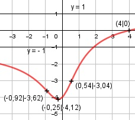

Aufgabe 136 x - 4 x - 4 f(x) = --------- = ------------ (x2 + 1)0,5 Quotientenregel erste Ableitung: u = x - 4, u' = 1 v = (x2 + 1)0,5 Kettenregel: v' = 0,5 * 2x * (x2 + 1)-0,5 = x * (x2 + 1)-0,5 1*(x2 + 1)0,5 - x*(x2 + 1)-0,5*(x - 4) f'(x) = ---------------------------------------- (x2 + 1) (x2 + 1)-0,5 * (x2 + 1 - x * (x - 4)) f'(x) = ---------------------------------------- x2 + 1 4x + 1 f'(x) = ------------------------ (x2 + 1)0,5 * (x2 + 1) 4x + 1 f'(x) = ------------- (x2 + 1)1,5 Quotientenregel zweite Ableitung: u = 4x + 1, u' = 4 v = (x2 + 1)1,5 Kettenregel: v' = 1,5 * 2x * (x2 + 1)0,5 = 3x * (x2 + 1)0,5 4*(x2 + 1)1,5 - 3x*(x2 + 1)0,5*(4x + 1) f''(x) = ---------------------------------------- (x2 + 1)3 4*(x2 + 1) - 3x*(4x + 1) f''(x) = (x2+1)0,5 * -------------------------- (x2 + 1)3 4x2 + 4 - 12x2- 3x f''(x) = -------------------------- (x2 + 1)-0,5 * (x2 + 1)3 -8x2 - 3x + 4 f''(x)= ----------------- (x2 + 1)2,5 Zur Beurteilung, ob f'''(x) ≠ 0: (Begründung siehe Aufgabe 105) u = -8x2 - 3x + 4, u' = -16x - 3 u' -16x - 3 f'''(x) = --- = ------------- v (x2 + 1)2,5 ≠ 0 für alle x ≠ -3/16 > 0 für alle x Definitionsbereich: -∞ < x < ∞ Waagerechte Asymptote: 4 x * (1 - ---) x - 4 x f(x) = ---------- = ----------------- 4 1 --- und ---- sind Nullfolgen x x2 4 x * (1 - ---) x x * 1 f(x) = ----------------- = --------- für x gegen ± ∞ |x| * |x| * 1 Mit |x| ist gleich x für x > 0 und |x| = -x für x < 0 x f(x) = --- = 1 für x gegen ∞ x x f(x) = ---- = -1 für x gegen -∞ -x Wertebereich: f(x) wird dann am größten, wenn x = -0,25 (Extremum) f(-0,25) = -4,12 --> -4,12 ≤ f(x) < 1 Symmetrie: -x – 4 -(x + 4) f(-x) = ----------- = ----------- ≠ f(x) --> keine Achsensymmetrie -(x + 4) x + 4 -f(-x) = - ---------- = ---------- ≠ f(x) --> keine Punktsymmetrie Nullstellen: f(x) = 0 x – 4 --------- = 0 |* x - 4 = 0 |+4 x = 4 N(4|0) Schnittpunkt mit der y-Achse: x = 0 0 - 4 f(0) = --------- = -4 Sy(0|-4) Extrempunkte: f'(x) = 0 4x + 1 ------------- = 0 |*(x2 + 1)1,5 (x2 + 1)1,5 4x + 1 = 0 |-1 4x = -1 |:4 -0,25 - 4 x = -0,25, f(-0,25) = ------------------ = -4,12 -8*(-0,25)2 - 3*(-0,25) + 4 f''(-0,25) = ----------------------------- > 0 ((-0,25)2 + 1)2,5 --> Tiefpunkt(-0,25| -4,12) Wendepunkte: f''(x) = 0 -8x2 - 3x + 4 ----------------- = 0 |*(x2 + 1)2,5 (x2 + 1)2,5 -8x2 - 3x + 4 = 0 | *(-1) 8x2 + 3x - 4 = 0 A, B, C - Formel: A = 8, B = 3, C = -4 x1,2 = x1,2 = x1,2 = -3 ± 11,7 x1,2 = ------------ 16 x1 = 0,54, 0,54 - 4 f(0,54) = ------------ = -3,04 x2 = -0,92, -0,92 - 4 f(-0,92) = ------------- = -3,62 WP1(0,54|-3,04), WP2(-0,92|-3,62) Graph:
